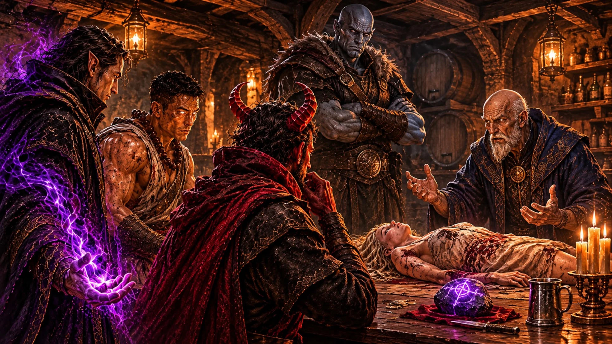

Nuove alleanze, vecchi debiti¶

Eleasias 13, 1499DR · sessione del 24/11/2026 · Party SVW
Lo scontro nel teatro in rovina infuria. Torval lancia una palla di fuoco ai piedi di Will e urla "Prendeteli!". Due gruppi di pirati emergono dall'oscurità dei palchi e si precipitano verso il party. Will lancia il libro nero a terra e lo colpisce con danni psichici, il libro reagisce e riflette i danni a Torval e allo stesso Will. I pirati, arrivati a tiro, lanciano delle grandi reti da pesca per intrappolare il party. Sangtiennoi e Klynt riescono a divincolarsi, Will viene catturato, Vaelith è a distanza di sicurezza. Torval muore con una tremenda esplosione di energia necrotica. Will si libera dalla rete, prova a recuperare il libro ma scivola a terra. Sangtiennoi, dopo aver menato uno dei pirati, prova a fare lo stesso ma cade a terra prono. Il libro sembra maledetto. Klynt recupera il libro, ma non riesce a contenerne la magia e subisce danni. Eliminati tutti i pirati, il party si concede un istante di confronto in attesa che termini l'esilio del Rosso. Il Rosso ritorna furioso e con due colpi di spada mette al tappeto Klynt per poi avventarsi su Sangtiennoi. Il monaco lo tempesta di colpi, Vaelith lo finisce. Anche il Rosso cade. Sangtiennoi aiuta Klynt a rimettersi in piedi.
La scena è tremenda. Il corpo senza vita di Maya al centro del palcoscenico, lo sguardo vuoto rivolto verso Will. Intorno a lei cadaveri, sangue e fiamme.
Il party recupera oro e alcuni oggetti magici. Avvertono dei passi avvicinarsi dalla platea. Una luce. Il party si prepara a un altro scontro. Invece arrivano Aldric Voss, Marek e il drow che lavora come portiere all'Isola di Peter. Ripreso il fiato, Aldric dice di essere sollevato di trovarli sani e salvi. Si scusa per averci messo tanto tempo a raggiungerli, spiega che è stato difficile rintracciare "quel ragazzino". Will chiede subito dell'occhiolino della sera prima alla Torre Arcana, Aldric risponde che ci sarà tempo per parlarne. Il mago chiede di Maya, poi ordina al drow di recuperarne le spoglie. Conosce un incantesimo di Reincarnazione che potrebbe donarle un nuovo corpo mantenendo integra la sua anima.
Chiede al party se fossero all'inseguimento del Rosso, il party conferma. Aldric propone di interrogare il cadavere del Rosso e lancia l'incantesimo Parlare con i Morti. La voce dei morti mette i brividi, ma i morti non possono mentire e le informazioni rivelate sono molto importanti. Il Rosso conferma che è stato lo zoppo ad assoldarlo per bruciare la Gatta Bianca, "voleva bruciare la casa dello Scriba". Maya è stata coinvolta per vendetta. Inoltre il Rosso è stato assoldato per colpire Isidor da una persona che non conosceva. Doveva usare il veleno che gli è stato fornito: il bardo doveva vivere. In cambio, "tanto tanto oro".
Vaelith chiede se Monrat sia al corrente della presenza di Aldric a Illusk, il mago fa intendere che sta agendo di sua iniziativa. Dà appuntamento al party alle Sette Vele e propone di seguire due strade diverse per uscire da Illusk. Prima di andarsene, rianima quattro cadaveri da usare come scorta per il rientro.
Tra le vie di Illusk tutto è stranamente tranquillo nonostante sia quasi il tramonto. Il party si confronta sulle rivelazioni del Rosso e sui rapporti tra Aldric e Monrat e su chi dei due meriti la loro fiducia. Forse nessuno dei due. In ogni caso, hanno imparato che la fiducia a Luskan costa moltissimo, e spesso il prezzo è pagato con il sangue.
Mentre la discussione prosegue, Will sente una voce. Senza dire una parola si allontana dagli altri seguendo il richiamo. Riconosce la voce di suo padre, Horik. Will inizialmente lo respinge, poi la manifestazione parla dell'anello e dell'anima della moglie, Malva. Will capisce che è davvero lo spirito di suo padre. Horik spiega che era stato lui a custodire l'anima di Malva nell'anello per proteggerla prima che avvenisse il peggio. Invita il figlio a riportarle l'anello e salvarla. Will dice che proverà a salvare anche lui, Horik gli rivela che la sua anima è dannata e appartiene a Orcus. La visione svanisce, Will si riunisce agli altri e racconta tutto quello che è successo. Informa i suoi compagni che, una volta che avranno risolto la situazione a Luskan, vorrà andare dalla madre.
Arrivati alle Sette Vele vengono accolti da Gus. Chiedono di Aldric, l'oste li accompagna al piano inferiore. Ritrovano Aldric e Marek. Vicino a loro, la salma di Maya. Il mago scopre le sue carte. Chiede l'aiuto del party per affrontare Monrat e invitarla a farsi da parte. Aldric vorrebbe prendere il suo posto alla Confraternita Arcana. Dice che Monrat è spietata e che disprezza la vita degli altri maghi, Marek conferma. Poi Aldric chiede a Vaelith del suo cristallo. Lo stregone conferma che lo sente cambiato. Aldric dice che è stata opera sua e si mostra con l'aspetto di Freddy. Il cristallo di Vaelith era una cimice con cui Monrat spiava e ascoltava il party tutto il tempo. Il mago non sta mentendo, Sangtiennoi ne è certo. Aldric chiede al party di ripensare agli ultimi giorni e se ricordano conversazioni a cui sono seguiti eventi inaspettati. Il party non trova una risposta immediata. Aver liberato il party dallo spionaggio di Monrat non è l'unica cosa che offre in cambio del loro aiuto. Offre l'incantesimo di Reincarnazione per Maya, offre di finanziare completamente la ricostruzione della Gatta Bianca, fondi extra con cui il party potrà costruire delle abitazioni per loro, qualora vogliano restare a Luskan. Infine offre un'alleanza reale con la Confraternita Arcana, non di essere solo degli strumenti come avviene ora.
La posta in gioco è molto alta, il party è diviso. Vaelith difende Monrat, ricorda che Daruma la definiva "pericolosa, ma non malvagia" e si chiede perché dovrebbero fidarsi della parola di Aldric. Will accusa Aldric di usare la vita di Maya come moneta di scambio. Vaelith si chiede perché la vita di Maya dovrebbe valere più di quella di tutte le vittime innocenti dell'incendio. Sangtiennoi rivela che si sente responsabile e che la morte di Maya è stata causata da una sua scelta. Aldric accetta di usare l'incantesimo di Reincarnazione subito, come gesto di buona fede. Ma chiede anche al party un atto di buona fede. Chiede che gli venga consegnata la pietra parlante con cui contattano Monrat. Sangtiennoi e Will indicano Vaelith. Lo stregone appoggia la pietra per terra, "Fate quello che volete". Esce e se ne va in camera. Will e Sangtiennoi chiedono tempo per decidere. Aldric li informa che ha corso un grande rischio a esporsi: è lui quello in maggior pericolo di vita. Concede tempo fino all'alba e chiede al party di non abbandonare l'edificio.
Aldric è un alleato di cui si possono fidare? Monrat ha davvero spiato il party attraverso il cristallo? E ci sono state delle parole che hanno messo in moto gli eventi? Chi ne ha pagato il prezzo? Cosa decideranno di fare Sangtiennoi e Will ora che hanno la possibilità di riportare in vita Maya?